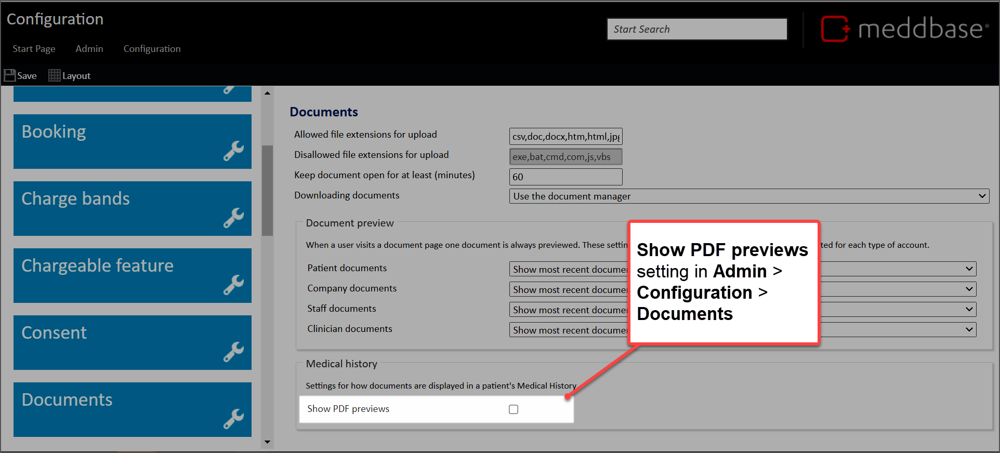
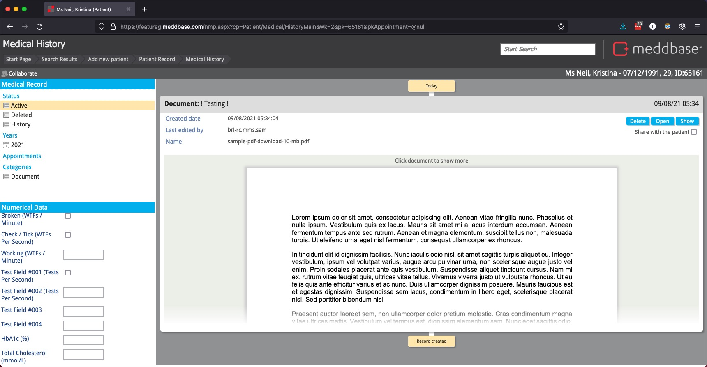
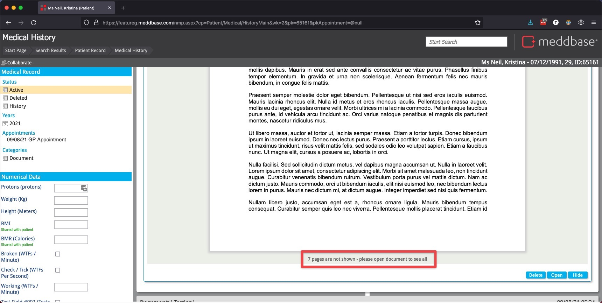
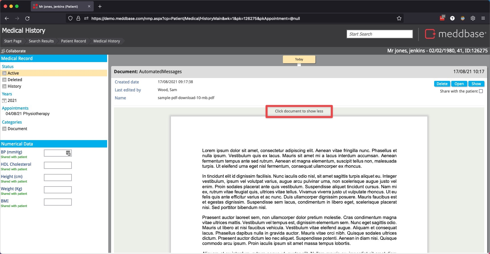
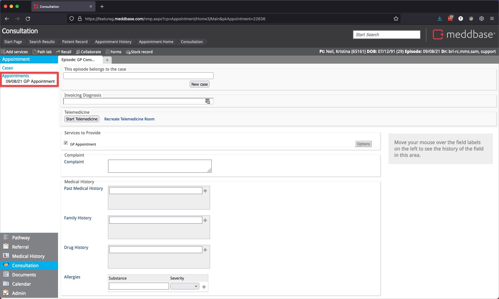
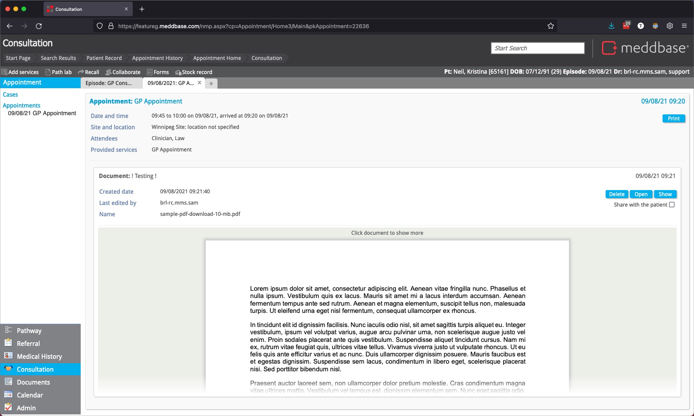

This article describes how to configure the ability to preview PDF files as part of a Patient's Medical History, as well as demonstrate the effects of that configuration.
To enable the ability to preview PDF files in a Patient's Medical History
1. Navigate to Admin > Configuration > Documents
On this screen, you'll see a configuration option for 'Show PDF previews'.

2. Check the box Show PDF previews
3. Then Save your configuration change.
This will enable the behaviour for all users of your Meddbase instance.
Once the feature is enabled, you'll be able to see a preview of any PDF uploaded to the patient record, in line in the Medical History.

By default, only a small portion of the document will be visible. You can view up to 5 pages of the document by clicking the prompt 'Click document to show more', or clicking anywhere on the visible portion of the document.
This will let you scroll through those first 5 pages, and then give you some more information about how much more document content is available.

If you need to see the entire document, you can still open it in your browser, or download it using the Document Manager, by choosing the Open action item above or below the document.
When the document preview is expanded, clicking anywhere on the document will close the preview.

If a PDF document is added during an appointment, you can also view it from within the consultation suite. To do so, from within the consultation, click on the Appointment you want to view on the left-hand side of the screen:

This will open a read only view of the appointment recorded previously, including documents attached during that consultation. PDF documents will be rendered in a similar way to the Medical History view:

You have the same controls in this view, and can;
This feature works best when the 'Use advanced PDF viewer' setting, located in Admin > Configuration > Advanced, is Disabled.